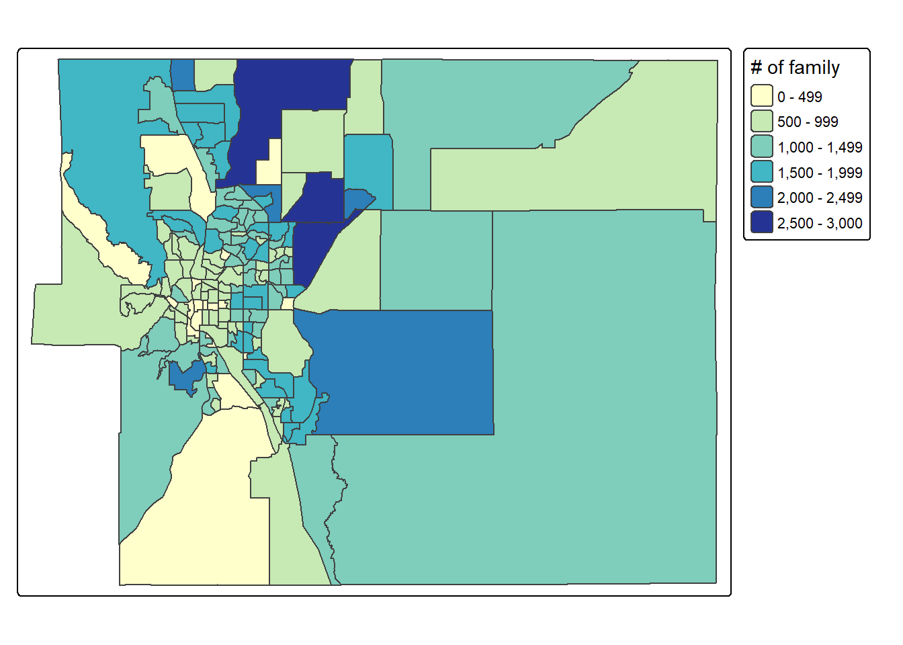

Chapter 4: Map Making (1) Intro
4.1 Lab Goals
This chapter aims to introduce basic map making concepts and techniques. It applies the analysis workflow that we have learnt in Chapter 3 to spatial visualization. After completing this tutorial, you should be able to:
- Understand the basic mapping concepts in R;
- Interpret and Manipulate tabular
and spatial data collected from U.S. Census;
- data cleaning
- data calculation
- filtering records
- joining data by columns
- Create and Export near publishable
static maps;
- producing choropleth map
- adding legend, scale bar and north arrow
- combining multiple maps together
4.2 Good Practice
4.2.1 Organizing Folders & Sub-folders
Similar to what we have done in previous labs, under the course folder, please create a folder called “lab4”. Next, in the lab4 folder, please create two sub-folders that one is called “data” and another one is “plot”. We’ll use the “data” folder to store data and export figures to “plot”.
4.2.2 Data
In this lab, we continue to explore US Census Bureau as a potential data source for spatial boundaries, socio-economic and demographic variables. This lab uses data collected from:
Cartographic Boundaries by geography (e.g., cities, counties, census tracts, block groups) or by scale. And
Census Tables summarizing the socio-economic and demographic characteristics of particular areas.
This practical will use El Paso county (CO) as a case study to explore its poverty level through map making. Please follow the steps below to download data, unzip it and move the data to the required folder.
- Go to https://github.com/fuzhen-yin/uccs_geoviz/blob/main/docs/data/lab4_data.zip
- Download the file “lab4_data.zip”
- Unzip folder “lab4_data.zip”
- Move all files from the “lab4_data” folder to the “data” folder under “lab4” see Step 4.2.1
If there you have any questions about the above-mentioned steps, please refer to Chapter 3.2.2 for detailed instructions.
4.2.3 Launching R Studio
Again, we would like to start a new project from scratch with a clean R Script. Please do the following steps. If you have any questions about these steps, please refer to the previous chapters for help.
- Step 1: Make sure all existing R projects are properly
closed.
- If not, please close it by going to File –> Close Project –> Save changes (see Chapter 2.5).
- Step 2: Create a New Project using Existing Directory, navigate to lab4, click open, then Create Project. (see Chapter 1.3).
- Step 3: Create a New Script by go to File –> New File –> R Script. Save the script by giving it a proper name.
4.2.4 Before Start
Heads-Up!
From this lab, all scripts will be non-copyable. Please try to:
- Re-write the script by yourself.
- R is case-sensitive
- organize scripts using line breaks
- annotate and comment the code using #
- Read through the text carefully and try to understand what bits of code are doing as you go.
- It’s okay that you don’t fully understand some codes. Don’t worry as the key is to revisit later and try to work out what is going on. Learning is a iterative process.
- Start to think about how you can adapt a particular line of code or functions to your own project.
4.3 Viz: Colorado Counties Map
4.3.1 Libraries & Data
This section starts with creating a simple map of counties in the state of Colorado.
We are going to use the following packages: * dplyr: data manipulation * tmap: mapping * sf: represent simple features as records in a data.frame or tibble with a geometry list-column. * data.table: data manipulation such as renaming.
You should have the libraries tmap and
dplyr installed from previous labs. If not, please
uncomment and run the bottom two lines.
#### install library
install.packages("sf")
install.packages("data.table")
#### If you don't have "tmap" and "dplyr" installed, please uncomment these two lines and run.
# install.packages("tmap")
# install.packages("dplyr")Next, let’s load the libraries.
# load library
library(dplyr)
library(tmap)
library(sf)
library(data.table)Check the current working directory. You should see a path ending
with something similar to COURSEFOLDER/lab4. If not, please
close the RStudio, go back to Section
4.2.1 to organize your folder, and Section
4.2.3 to re-launch RStudio.
# working directory
getwd()## [1] "D:/OneDrive/UCCS/Teaching/GES4070_5070_GeoViz/Labs/01_git_wk/00_code_uccs_geoviz"On the bottom right window, clicking on the Files tab, you should see something similar to the screenshot below.

We will read the data from the “data” folder. Please make sure you can see four folders in your data folder as shown in Figure 4.1. If not, please go back to Section 4.2.2.

We will import four data files and save them under different variable
names. In previous labs, we have used the function
read.csv() to import .csv files. This time, we
will use st_read() to read shapefile (.shp).
Hint: The easy way to write the
"FILE_PATH" is to go to your “data” folder and
copy folder & file names, and organize them using forward slashes
/.
## US counties (simple features)
sf_us_county <- st_read("data/cb_2023_us_county_500k/cb_2023_us_county_500k.shp")
## Colorado census tracts (simple features)
sf_co_tract <- st_read("data/cb_2023_08_CO_tract_500k/cb_2023_08_tract_500k.shp")
## El Paso family in poverty - data (data frame)
df_ep_poverty <- read.csv("data/ACSST5Y2022.S1702_poverty_family_El Paso/ACSST5Y2022.S1702-Data.csv")
## El Paso family in poverty - metadata (data frame)
df_ep_poverty_meta <- read.csv("data/ACSST5Y2022.S1702_poverty_family_El Paso/ACSST5Y2022.S1702-Column-Metadata.csv")Please open these data in RStudio (by clicking objects in the Environment panel) and take some time to understand what are the columns.
4.3.2 Data Pre-processing
We will start with the sf_us_county. This data includes
the information for all counties in the U.S. It also has a column
geometry storing the spatial boundaries of counties as
polygons.
Let’s check the class of the sf_us_county data by using
the function class() and have a look at it using
View().
# check class
class(sf_us_county)
# open
View(sf_us_county)After examining the data, it seems sf_us_county includes
all counties in the U.S. But we are only interested in those in the
state of Colorado. Let’s use the function filter() to
extract only Colorado counties from
sf_us_county based on their values in the
STATE_NAME column, and save it as a new object
sf_co_county.
Use
filter()find rows/cases where conditions are true (doc).
The
%>%symbol is used to build pipes that chains multiple operations together. It takes the output of the expression on its left and passes it as the first argument to the function on its right. The shortcut of%>%is [ctrl+shift+M] (Windows) or [Cmd+Shift+M] (Mac).
# extract CO counties
sf_co_county <- sf_us_county %>% filter(STATE_NAME == "Colorado")Have a look at the data sf_co_county. Please write to
your lab4 report:
[Q1] How many counties in Colorado based on the data
sf_co_county
[Q2] In sf_co_county, please locate the
record of El Paso county, what is its GEOID?
View(sf_co_county)Next,we will extract the record of El Paso county from
sf_co_county based on its value in the column
NAME.
# El Paso County
sf_ep_county <- sf_co_county %>% filter(NAME == "El Paso")In addition to use the NAME column to extract El Paso
county from sf_co_county. We can also use other columns
such as GEOID and NAMELSAD.
[Q3] Please fill and run the commands below, and
type your answers to lab4 report.
Hint: Have a look at the code above and also have a
look at the data sf_co_county.
sf_ep_county <- sf_co_county %>% filter(GEOID == "TYPE_ANSWER")
sf_ep_county <- sf_co_county %>% filter(NAMELSAD == "TYPE_ANSWER")4.3.3 Map making
Okay, after data extraction, we have two new datasets:
sf_co_countyshows counties in Colorado andsf_ep_countythe county of El Paso.
Let’s do some mapping using the tmap package.
First, we set the tmap_mode() to plot for
static maps.
# static map
tmap_mode("plot")Then, produce a simple map of Colorado Counties (MAP1).
tm_shape()specifies what a spatial data object (in our case, the simple feature class).tm_polygons()draws polygons.
# MAP1
tm_shape(sf_co_county) + tm_polygons()Produce another map of El Paso county only (MAP2). This time, we specify the fill color and also the border color. Feel free to try other colors.
# MAP2
tm_shape(sf_ep_county) + tm_polygons(fill = "orange", col = "blue")Overlap MAP1 and MAP2 to produce another map that highlights the El Paso county (MAP3).
# MAP3
tm_shape(sf_co_county) + tm_polygons() +
tm_shape(sf_ep_county) + tm_polygons(fill = "orange", col = "blue")Improve MAP3 by using the following functions and
save the plot as a new variable map_ep_county.
tm_text()adds labels showing county names based on thesf_co_countydata.tm_compass(): adds a north arrow.tm_scale_bar(): adds a scale bar and put it in the bottom-right.
# improve MAP3
map_ep_county <- tm_shape(sf_co_county) + tm_polygons(fill_alpha = 0) +
tm_shape(sf_ep_county) + tm_polygons(fill = "orange", col = "black", lwd = 2) +
tm_shape(sf_co_county) + tm_text(text = "NAME", size = 0.3) +
tm_compass(north = 0, size = 1) + tm_scalebar(position = c("right", "bottom"), width = 9)
map_ep_countyExport the improved MAP3 to the “plot” folder we have created in Step 4.2.1.
# export
pdf("plot/map3_elpaso_county.pdf")
map_ep_county
dev.off()[Q4] Please go to your “plot” folder, open the pdf “map3_elpaso_county.pdf”, and paste the screenshot to your lab4 report.
4.4 Viz: El Paso Census Tracts Map
This section will zoom into the census tracts in the state of Colorado.
According to U.S. Census Bureau, census tracts are small, relatively. permanent statistical subdivisions of a county that are used to collect and present census data. On average, each census tract typically has 4,000 residents (min=2,500, and max=8,000).
4.4.1 Data Pre-processing
We have imported the census tract boundaries in Colorado in Step
4.3.1 and saved it into the variable sf_co_tract. Let’s
have a look at the data.
[Q5] Please report how many census tracts in
Colorado according to sf_co_tract.
[Q6] What column to use to extract census tracts that are located in El Paso county?
## Open
View(sf_co_tract)Next, we check the class and data types of
sf_co_tract.
## Check class
class(sf_co_tract)
## data type of each column
str(sf_co_tract)In terms of data type, it seems of most columns are characters (or
string). But it also has two columns ALAND (land area) and
AWATER (water area) as numeric.
[Q7] Please report the data type of column
geometry to lab4 report.
Let’s extract all census tracts that are located in
El Paso County using the function filter(). (I know, the
chunk of code below reveals the answer of Q6 :)
# El Paso census tracts
sf_ep_tract <- sf_co_tract %>% filter(NAMELSADCO == "El Paso County")# open data
View(sf_ep_tract)4.4.2 Map making
Make a map showing census tracts in El Paso County (MAP4).
## MAP4
tm_shape(sf_ep_tract) + tm_polygons(fill = 'white') ## map the COUNTY border with transparent color and solid border line
tm_shape(sf_ep_county) + tm_polygons(fill_alpha = 0, lwd = 3)Highlight the border of El Paso County in MAP4 (through overlapping the census tracts map with El Paso county map).
fill_alpha=represents the transparency of used colors.
## combine the map of census tract and the map of county border together
## highlight county boundary in MAP4
tm_shape(sf_ep_tract) + tm_polygons(fill = 'white') +
tm_shape(sf_ep_county) + tm_polygons(fill_alpha = 0, lwd = 3)Continue to improve MAP4 by adding a north arrow, a
scale bar, and removing frame using tm_layout().
## improve MAP4
map_ep_tract <- tm_shape(sf_ep_tract) + tm_polygons(fill="white") +
tm_shape(sf_ep_county) + tm_polygons(fill_alpha = 0, lwd = 3) +
tm_compass(north = 0, size = 1.5) +
tm_scalebar(position = c("right", "bottom"), width = 10) +
tm_layout(frame = F)
map_ep_tract## Export
pdf("plot/map4_elpaso_tracts.pdf")
map_ep_tract
dev.off()[Q8] Please go to your “plot” folder, open the pdf “map4_elpaso_tracts.pdf”, and paste the screenshot to your lab4 report.
4.5 Viz: Mapping Families in Poverty
Finally, we are approaching the most “exciting” part of this tutorial which is to combine tabular and spatial data and produce a choropleth map exploring the poverty issues in El Paso county.
4.5.1 Poverty Data
Remember the two poverty data frames df_ep_poverty and
df_ep_poverty_meta that we have loaded in Step
4.2.2?
Both data frames are collected from US Census Bureau using the Table S1702: Poverty Status in the Past 12 Months of Families.
Unlike the census data we haves seen in Lab 3 that have been cleaned and pre-processed, the two data frame here are the raw data that are directly collected from the Census.
Let’s have a look at them.
## open
View(df_ep_poverty)
View(df_ep_poverty_meta)The
df_ep_povertytable shows the poverty data itself. Thedf_ep_poverty_metais the metadata that tells information about the poverty data. Particularly, it explains the meaning of column names indf_ep_poverty.
For example, df_ep_poverty_meta suggests that
S1702_C01_001Eis the estimate total number of families in each census tractS1702_C01_041Emeasures the number of families occupying a housing unit as owners.S1702_C01_042Emeasures the number of families occupying a housing unit as renter.
The df_ep_poverty_meta also explains what are the
columns of income-to-poverty ratio.
The income-to-poverty ratio measures an individual or family’s income to the poverty threshold. A ratio less than 100% suggests that a family’s income is less than the poverty level.
S1702_C01_043Etells about the estimate number of families that has income less than 50% of the poverty threshold. These are the families that suffer the most.
[Q9] What is the meaning of column name
S1702_C01_044E. Write your answer to lab4
report Hint: Please (1) open the data
`df_ep_poverty_meta, (2) search S1702_C01_044E on
the top right (as shown in Figure 4.2), and (3) try to figure out the
“Label” associated with “S1702_C01_044E”.
4.5.2 Data Cleaning & Pre-processing
Going back to our data, let’s check how many columns and rows are in
df_ep_poverty.
# number of rows
nrow(df_ep_poverty)
# number of columns
ncol(df_ep_poverty)While the df_ep_poverty has 603 columns. But we only
need some of them. Let’s create a list storing the column names that we
are interested in including (the chunk of CODE below is copyable):
# list of OLD column names
lt_poverty_col <- c("GEO_ID", "NAME", "S1702_C01_001E", "S1702_C01_041E", "S1702_C01_042E", "S1702_C01_043E", "S1702_C01_044E")
# list of NEW names to change
lt_poverty_new <- c("GEO_ID", "NAME", "ttl_famly", "famly_owner", "famly_renter", "famly_50pct_poverty", "famly_125pct_poverty")Then, we create a dataframe that explains the above mentioned column names.
## create a new data frame with two columns: "old_col_name" and "new_col_name"
df_poverty_cols <- data.frame(
old_col_name = lt_poverty_col,
new_col_name = lt_poverty_new )Have a look at the dataframe df_poverty_cols
View(df_poverty_cols)[Q10] Open df_poverty_cols and paste a
screenshot of it to lab4 report
Based on the column names in the list lt_poverty_col, we
data corpus from df_ep_poverty and save it as a new &
clean data frame df_ep_poverty_cln.
# extract useful columns
df_ep_poverty_cln <- df_ep_poverty[lt_poverty_col]Replace column names in df_ep_poverty_cln based on table
df_poverty_cols.
# update column names
setnames(df_ep_poverty_cln, old=df_poverty_cols$old_col_name, new=df_poverty_cols$new_col_name)Delete the first row df_ep_poverty_cln and reset the row
index. Do you know why?
# delete the first row
df_ep_poverty_cln <- df_ep_poverty_cln[-1, ]
# reset row index
rownames(df_ep_poverty_cln) <- NULLCheck data types in df_ep_poverty_cln.
# view data
View(df_ep_poverty_cln)
# check the data
str(df_ep_poverty_cln)While the columns
"ttl_famly", "famly_owner", "famly_renter", "famly_50pct_poverty", "famly_125pct_poverty"
contain numerical values, they are identified as characters. Let’s make
them numeric.
# convert one column from string to numeric
df_ep_poverty_cln$ttl_famly <- as.numeric(df_ep_poverty_cln$ttl_famly)
# convert multiple columns from string to numeric
df_ep_poverty_cln[,3:7] <- sapply(df_ep_poverty_cln[,3:7], as.numeric) %>% as.data.frame()
# check the data type again
str(df_ep_poverty_cln)## 'data.frame': 167 obs. of 7 variables:
## $ GEO_ID : chr "1400000US08041000102" "1400000US08041000103" "1400000US08041000104" "1400000US08041000202" ...
## $ NAME : chr "Census Tract 1.02; El Paso County; Colorado" "Census Tract 1.03; El Paso County; Colorado" "Census Tract 1.04; El Paso County; Colorado" "Census Tract 2.02; El Paso County; Colorado" ...
## $ ttl_famly : num 1018 620 673 1099 713 ...
## $ famly_owner : num 915 144 392 800 445 481 471 492 435 700 ...
## $ famly_renter : num 103 476 281 299 268 269 351 121 137 131 ...
## $ famly_50pct_poverty : num 0 0 21 34 49 18 116 9 2 126 ...
## $ famly_125pct_poverty: num 65 57 129 64 106 157 140 9 10 152 ...Calculate percentage by using the column famly_renter
(renter occupied family) as an example.
\[ \% \ of \ renter \ occupied \ family = 100 * \frac {count \ of \ renter \ occupied \ family} {total \ count \ of \ family} \]
df_ep_poverty_cln["pct_fam_renter"] <- 100 * df_ep_poverty_cln$famly_renter / df_ep_poverty_cln$ttl_famly
df_ep_poverty_cln["pct_fam_pov_50pct"] <- 100 * df_ep_poverty_cln$famly_50pct_poverty / df_ep_poverty_cln$ttl_famly
df_ep_poverty_cln["pct_fam_pov_125pct"] <- 100 * df_ep_poverty_cln$famly_125pct_poverty / df_ep_poverty_cln$ttl_famlyHave a look at the df_ep_poverty_cln and check values
for Census Tract 38.02. It seems this row as some not valid
values (e.g., NA). Replace NA with
0.
# replace NA
df_ep_poverty_cln[is.na(df_ep_poverty_cln)] <- 0Quick look at the data.
# open data
View(df_ep_poverty_cln)4.5.3 Exploratory Analysis
Let’s check the distribution of ttl_famly of all
census tracts in El Paso by producing a histogram
hist().
# Exploratory analysis
hist(df_ep_poverty_cln$ttl_famly)Check the distribution of three variables together including:
pct_fam_renterpercentage of renter-occupied family;pct_fam_pov_50pctpercentage of family below 50% of poverty level;
pct_fam_pov_125pctpercentage of family below 125% of poverty level;
# run the three lines below together
hist(df_ep_poverty_cln$pct_fam_renter, col='orange')
hist(df_ep_poverty_cln$pct_fam_pov_125pct, col='blue', add= T)
hist(df_ep_poverty_cln$pct_fam_pov_50pct, col='green', add= T)4.5.4 Joining
Let’s join the table df_ep_poverty_cln with the spatial
boundaries stored in the simple data sf_ep_tract based on
GEOIDs (i.e., a unique identifier for each census tract).
# left join
sf_ep_tract_pov <- left_join(sf_ep_tract, df_ep_poverty_cln, by=c("GEOIDFQ"="GEO_ID"))4.5.5 Mapping
Set the plot mode to static
# static
tmap_mode("plot")Quick mapping to explore four variables including
"ttl_famly", "pct_fam_renter", "pct_fam_pov_50pct", "pct_fam_pov_125pct".
# quick mapping
lt_map_col <- c("ttl_famly", "pct_fam_renter", "pct_fam_pov_50pct", "pct_fam_pov_125pct")
for (column in lt_map_col){
print(column)
print(tm_shape(sf_ep_tract_pov) + tm_polygons(fill = as.character(column)))
}Please use the arrows in the Plot panels to see all maps (as shown in Figure 4.3).
Okay, after quickly mapping the four variables, let’s produce maps one by one and:
- give them proper legend labels
- use different color palettes
- export as a pdf
# MAP5 - # of families in each census tract
map_ep_tract_family <- tm_shape(sf_ep_tract_pov) +
tm_polygons(fill = "ttl_famly",
fill.scale = tm_scale_intervals(values = "brewer.yl_gn_bu"),
fill.legend = tm_legend("# of family")) +
tm_layout(legend.outside = T)
# plot map
map_ep_tract_family
# export
pdf("plot/map5_elpaso_tracts_family_counts.pdf")
map_ep_tract_family
dev.off()# MAP6 - % of renter-occupied families in each census tract
map_ep_tract_renter <- tm_shape(sf_ep_tract_pov) +
tm_polygons(fill = "pct_fam_renter",
fill.scale = tm_scale_continuous(values = "brewer.purples"),
fill.legend = tm_legend("renter-occupied family (%)")) +
tm_layout(legend.outside = T)
# plot map
map_ep_tract_renter# export
pdf("plot/map6_elpaso_tracts_renter_occupied_family_pct.pdf")
map_ep_tract_renter
dev.off()# MAP7 - % of families below 50% of poverty in each census tract
map_ep_tract_50pct_pov <- tm_shape(sf_ep_tract_pov) +
tm_polygons(fill = "pct_fam_pov_50pct",
fill.scale = tm_scale_continuous(values = "brewer.greens"),
fill.legend = tm_legend("below 50% poverty (%)")) +
tm_layout(legend.outside = T)
# plot map
map_ep_tract_50pct_pov
# export
pdf("plot/map7_elpaso_tracts_family_below_50pct_poverty.pdf")
map_ep_tract_50pct_pov
dev.off()# MAP8 - % of families below 125% of poverty in each census tract
map_ep_tract_125pct_pov <- tm_shape(sf_ep_tract_pov) +
tm_polygons(fill = "pct_fam_pov_125pct",
fill.scale = tm_scale_continuous(values = "brewer.blues"),
fill.legend = tm_legend("below 125% poverty (%)")) +
tm_layout(legend.outside = T)
# plot map
map_ep_tract_125pct_pov# export
pdf("plot/map8_elpaso_tracts_family_below_125pct_poverty.pdf")
map_ep_tract_125pct_pov
dev.off()At the end, we combine all maps together into a single plot.
# organize all maps together
t <- tmap_arrange(map_ep_tract_family,
map_ep_tract_renter,
map_ep_tract_50pct_pov,
map_ep_tract_125pct_pov, ncol=2)
pdf("plot/map9_elpaso_tracts_analysis.pdf", width = 12, height = 8)
t
dev.off()[Q11] Please go to your “plot” folder, open the pdf “map9_elpaso_tracts_analysis.pdf”, and paste the screenshot to your lab4 report.
If you want to explore more color palette, we can use the package
cols4all. The following chunk of code, install
cols4all, launch it, and open an interactive window for a
wide range of color palette choices.
to use a particular color palette by calling its series + . + name. For instance, the code
brewer.bluesrepresents the palette “blues” from the “brewer” series.
Don’t forget to CLOSE this interactive color palette to RETURN to your script.
## install package
install.packages(cols4all)
## call the library
library(cols4all) # color palette
## open an interactive color palette
c4a_gui()4.6. Close & Exit
Congratulations!! You have completed the entire tutorial by typing the script by yourself!! Excellent work.
Please go “File”–> “Close Project” – a pop window asking “Do you want to save these changes” –> “Yes”.
Don’t forget to submit the lab4 report and your script to Canvas.